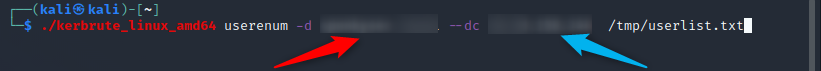
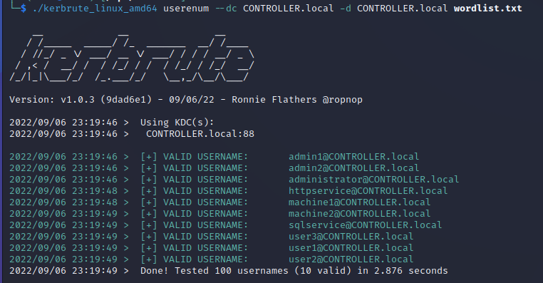

Kerbrute#
Kerbrute is a Kerberos user enumeration tool, that attempts to log in using a pre-defined list of usernames. It isnt trying to log in as such, but if it gets a response asking for a password, it assumes the user exists.
Install#
You will need to pull the files from github, and likely run as root to be able to write the files.
sudo mkdir /opt/kerbrute
cd /opt/kerbrute
sudo wget ropnop/kerbrute
chmod +x kerbrute_linux_amd64
When running kerbrute, you will need to make sure the domain is a part of your DNS resolution (or hosts file). On linux this is in your /etc/hosts file.
[ip] domain.TLD
10.0.0.1 ATTACK.me
Running#
You can now run the software from the coppied directory. Red is the Domain, Blue is the IP of the target to try log in to

